Seven regions, eighteen pilgrimage spots. Click any image to visit the official tourism or shrine website, or use the buttons below each card to find hotels and book guided tours nearby.
モデル校
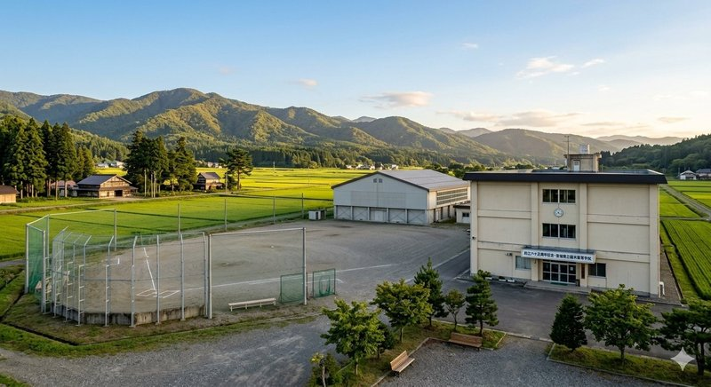
The volleyball sports anime *Haikyuu!!* placed its fictional Karasuno High in rural Miyagi prefecture, and Tohoku's quiet countryside has become a pilgrimage circuit for fans tracing the show's atmospheric backdrops. The Sendai City Gymnasium — where actual high-school nationals are held each summer — anchors the unofficial route, while smaller schools and rural lanes around Sendai and northern Iwate match the gentle landscapes glimpsed in exterior cuts. Spring cherry-blossom and autumn-foliage seasons frame the countryside most beautifully. Combine the tour with a Sendai gyutan dinner and the anime goods shops along the Ichibancho arcade.
仙台
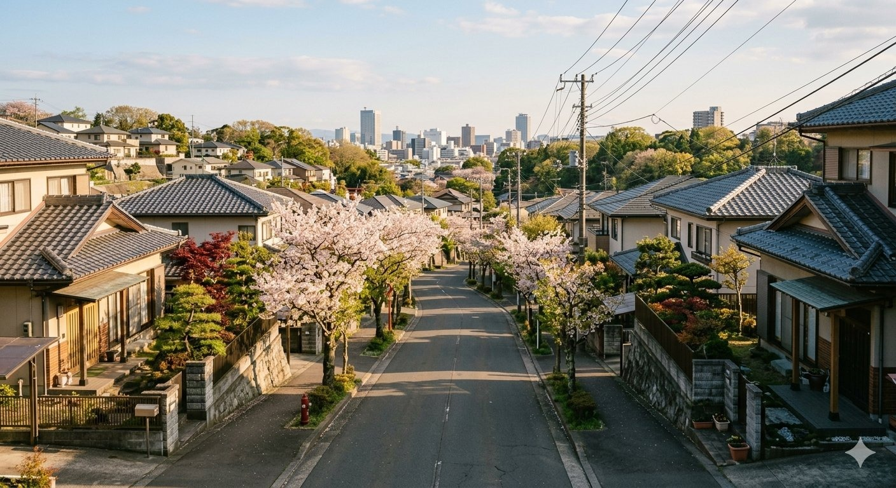
The fourth chapter of *JoJo's Bizarre Adventure*, set in the fictional town of Morioh, drew its setting directly from creator Hirohiko Araki's hometown of Sendai. Fans walking the city today recognize the residential lanes, the harbor area, and the leafy avenues that the manga transposed into Morioh's streets. Sendai erected an honorary monument to the artist near the Mediatheque cultural center, and a major retrospective exhibition there draws fans nationwide. Late spring and autumn afternoons capture the suburban warmth that defines the work's atmosphere. Pair your stroll with a regional gyutan beef tongue meal in the Ichibancho arcade.
四谷
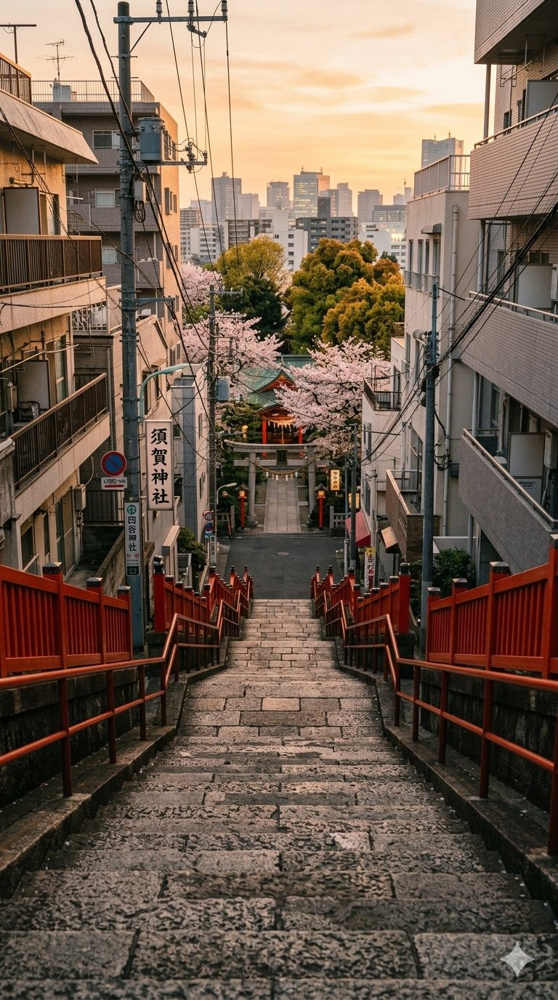
The 2016 box-office sensation *Your Name* turned a quiet residential staircase in Tokyo's Yotsuya district into one of Japan's most photographed pilgrimage sites. Suga Shrine itself is a small neighborhood Shinto sanctuary, but the staircase descending from its grounds — recreated almost frame-perfect in one of the film's most-recognized scenes — has become an essential stop on any anime tour of Tokyo. The site is busiest at sunset when fans frame the shot to match the film's lighting. From Yotsuya-Sanchome Station the walk takes ten minutes through pleasant backstreets that themselves cameo throughout the movie.
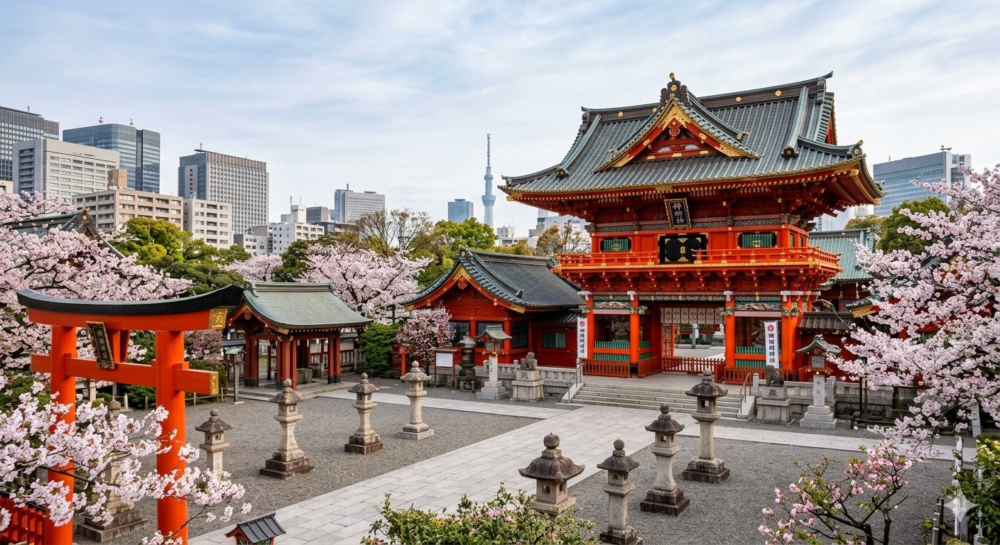
The 1,300-year-old Kanda Myojin shrine in Tokyo's Akihabara district has long protected merchants, lovers, and modern technology — and since serving as the spiritual home of the *Love Live! School Idol Project* franchise, it has welcomed waves of devoted fans alongside its traditional worshippers. Painted prayer plaques (ema) bearing fan-drawn artwork hang in dedicated racks, and the shrine sells crossover charms during major anime events. Visit during the spectacular Kanda Festival in mid-May, one of Tokyo's three great festivals, then walk the five minutes downhill into Akihabara's electronics and anime arcades for the full pilgrimage experience.
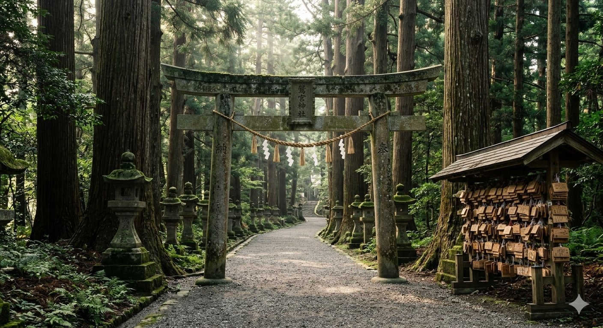
The slice-of-life comedy *Lucky Star* transformed this 1,400-year-old shrine in eastern Saitama into Japan's first major modern anime pilgrimage destination back in 2007, when the show's opening sequence prominently featured its torii gate and grounds. Washinomiya is one of the oldest shrines in the entire Kanto region, and the surge of fan visitors helped Kuki city's tourism economy enormously. Hand-drawn ema prayer plaques cover the shrine's racks, and the annual Hatsumode New Year visit draws record crowds. The shrine sits a short walk from Washinomiya Station on the Tobu Isesaki Line, easy day-trip distance from central Tokyo.
神社
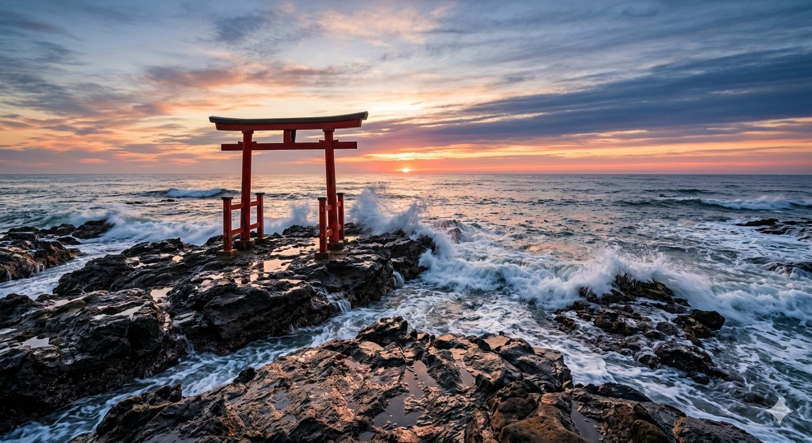
The seaside Oarai Isosaki Shrine in coastal Ibaraki prefecture became famous through the tank-warfare anime *Girls und Panzer*, which set its fictional school town directly atop the real Oarai. The shrine's iconic dragon-flanked torii rises dramatically from the rocks at the Pacific shore, especially photogenic at dawn. Throughout Oarai town, painted character panels and themed merchandise welcome fans, and the annual Oarai Anko Festival in November combines the local angler-fish specialty with a massive anime celebration. The shrine itself dates to 856 AD; a sunrise visit followed by an angler-fish hot pot lunch is the classic pilgrimage day-trip.
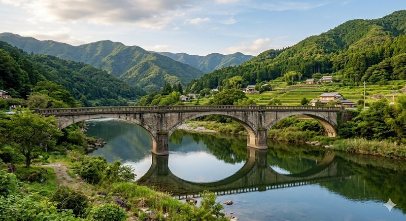
The 2011 emotional drama *Anohana: The Flower We Saw That Day* set its story of childhood friendship in Chichibu, the mountain valley town in western Saitama. The Kyu Chichibu-bashi (Old Chichibu Bridge) — an arched concrete span across the Arakawa River — appears as a recurring meeting place across the series and has become the heart of the fan pilgrimage route. The town hosts an annual *Anohana* anniversary event each summer with illuminated lanterns. Chichibu is reachable in 80 minutes from central Tokyo via the Seibu Limited Express. Visit in late summer when the Chichibu Yomatsuri festivals bring the town to life.
長野
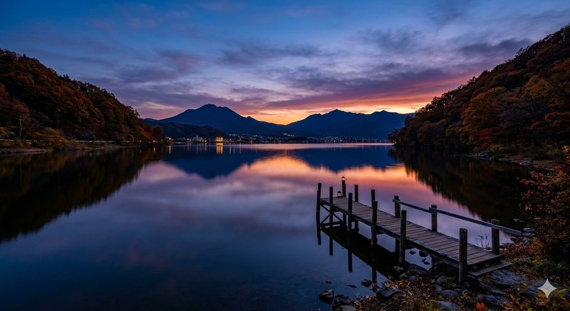
The fictional Itomori Lake of *Your Name* drew its mountain-cradle silhouette directly from real Lake Suwa in central Nagano prefecture, and the surrounding Suwa basin was extensively referenced for the film's rural town scenes. The lake freezes over in deep winter, when the rare Omiwatari ice ridge phenomenon — sacred to local Shinto — slowly cracks across its surface. Suwa Taisha, one of Japan's oldest shrines, sits on the lakeshore. From the Tateishi Park observation deck the entire basin spreads below at sunset, replicating one of the film's most-recognized panoramic shots. Suwa is reachable in two hours from Shinjuku.
長野
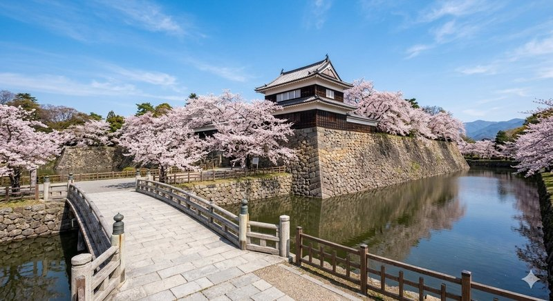
The 2009 family-tech drama *Summer Wars* set its multigenerational story at a sprawling country estate in Ueda, Nagano, and the city has fully embraced its anime fame. While the specific film mansion is fictional, Ueda Castle — built in 1583 by famed warlord Sanada Masayuki and twice successfully defended against Tokugawa armies — anchors any visit and matches the film's atmospheric Sengoku-era backdrop. The castle's surviving stone walls and reconstructed turrets sit within a moated park lit beautifully during cherry blossom season. Combine the castle with the nearby Bessho Onsen hot springs for the relaxed countryside Nagano summer the anime captures.
岐阜
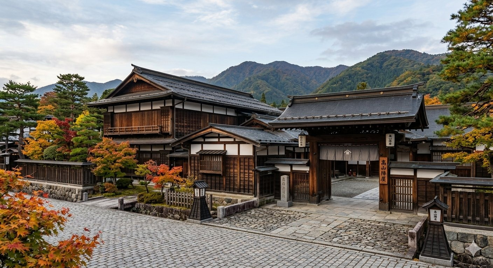
The Kyoto Animation mystery series *Hyouka* drew its fictional Kamiyama town directly from the historic mountain city of Takayama in Hida, Gifu prefecture. Takayama Jinya — Japan's only surviving Edo-period government office — appears throughout the series alongside the surrounding sake-brewery district and morning markets. The lattice-fronted merchant houses, lantern-lit Sanmachi quarter, and stone bridges over the Miyagawa river match the show's atmospheric backdrops with remarkable fidelity. The biennial Takayama Festival each spring and autumn — featuring elaborate floats — is the dream visit. Reach Takayama in 2.5 hours by limited express from Nagoya.
滋賀
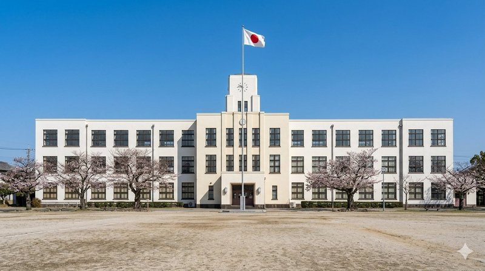
The light-music slice-of-life series *K-On!* set its school scenes in a building based directly on the Toyosato Elementary School in rural Shiga prefecture, designed by American architect William Merrell Vories in 1937. The Western-style brick building was scheduled for demolition before fan response saved it; today it houses a community center, the original music room is preserved as a small *K-On!* tribute museum, and visiting fans leave handwritten ema-style messages and offerings on its windowsills. The school sits a 20-minute walk from Toyosato Station on the Ohmi Railway. Combine with nearby Hikone Castle for a memorable Shiga day-trip.
西宮
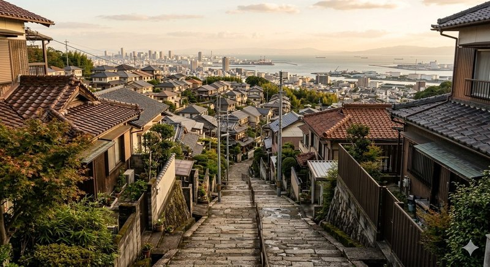
The 2006 cult slice-of-life comedy *The Melancholy of Haruhi Suzumiya* placed its fictional North High directly in Nishinomiya city, between Osaka and Kobe, and the real Nishinomiya Kita High School plus surrounding hillside neighborhoods became a major pilgrimage circuit through the late 2000s. While the campus itself is closed to the public, the long uphill approach road, the nearby Koshien Park, and the Hankyu Nishinomiya-Kitaguchi Station all appear in atmospheric backgrounds throughout the series. Cherry-blossom season frames the school approach beautifully. Combine with a Hanshin Tigers baseball game at nearby Koshien Stadium for a complete Nishinomiya day.
京都
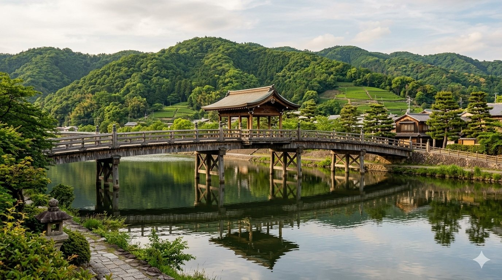
The Kyoto Animation high-school music drama *Sound! Euphonium* placed its concert-band story in the historic riverside town of Uji, just south of Kyoto, and the iconic Uji Bridge — first built in 646 AD — features in countless atmospheric scenes throughout the series. The bridge crosses the storied Uji River, framed by Byodo-in temple's Phoenix Hall (a UNESCO World Heritage site) and centuries-old matcha tea houses. The traditional matcha tea district along the river makes the pilgrimage doubly rewarding. Visit in late spring when the Uji River Festival lights the banks with paper lanterns floated down the current.
ロード
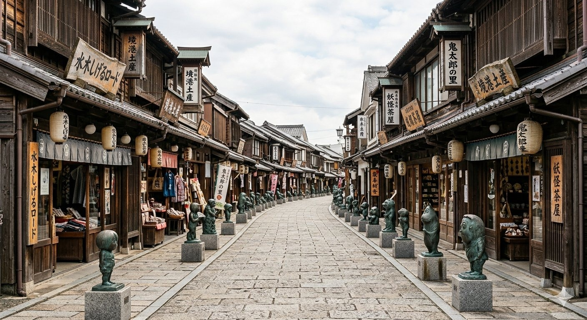
The yokai-themed manga and anime franchise *GeGeGe no Kitaro* by Sakaiminato-born author Mizuki Shigeru transformed his hometown into Japan's premier monster-themed pilgrimage destination. Mizuki Shigeru Road, an 800-meter shopping street near Sakaiminato Station, displays 177 bronze yokai sculptures depicting the spirits and demons of Japanese folklore that the series popularized worldwide. The Mizuki Shigeru Memorial Museum at the road's end offers an immersive exhibition of the artist's life and work. Visit at night when the yokai sculptures take on unsettling shadows under the street lamps. Reach Sakaiminato by JR train from Yonago in 45 minutes.
鳥取
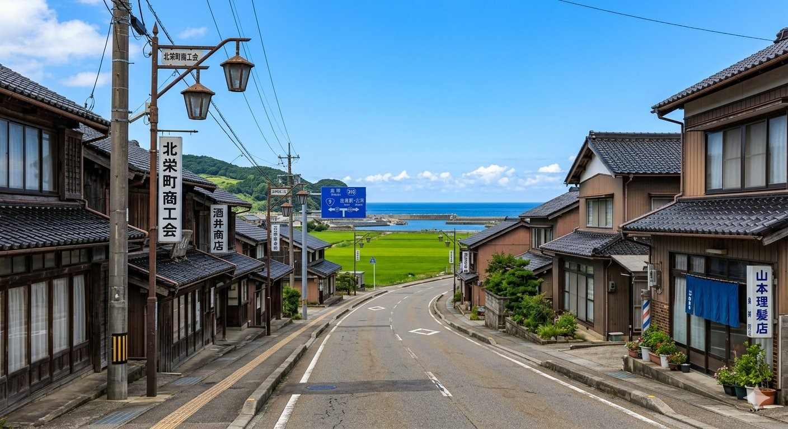
The northern Tottori town of Hokuei is the birthplace of *Detective Conan* manga creator Gosho Aoyama, and the entire town has embraced its mystery-anime fame. "Conan-dori" street features themed bronze sculptures, decorated manhole covers, and themed local trains painted with the series' iconic detective silhouette. The Gosho Aoyama Manga Factory museum showcases the artist's original drawings, working tools, and the long history of the franchise. Pair with Tottori's famous coastal sand dunes — Japan's largest — just an hour east. Reach Hokuei via the JR San'in Line from Yonago Station in around 30 minutes.
本館
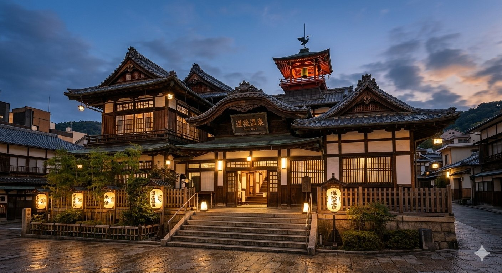
The 1894 wooden bathhouse Dogo Onsen Honkan in Matsuyama is widely cited as a primary architectural inspiration for the otherworldly bathhouse of Studio Ghibli's *Spirited Away*. Japan's oldest hot spring (over 3,000 years of recorded history), the three-story labyrinthine wooden structure with its distinctive watchtower drum room evokes the film's mysterious atmosphere palpably. Although Hayao Miyazaki has not officially confirmed the connection, fans treasure the resemblance. The bathhouse is open to all and the soaking experience itself — the hot water, the wooden corridors, the after-bath tea on tatami — is unforgettable. Reach Matsuyama by ferry from Hiroshima or by direct flights from Tokyo.
竈門神社
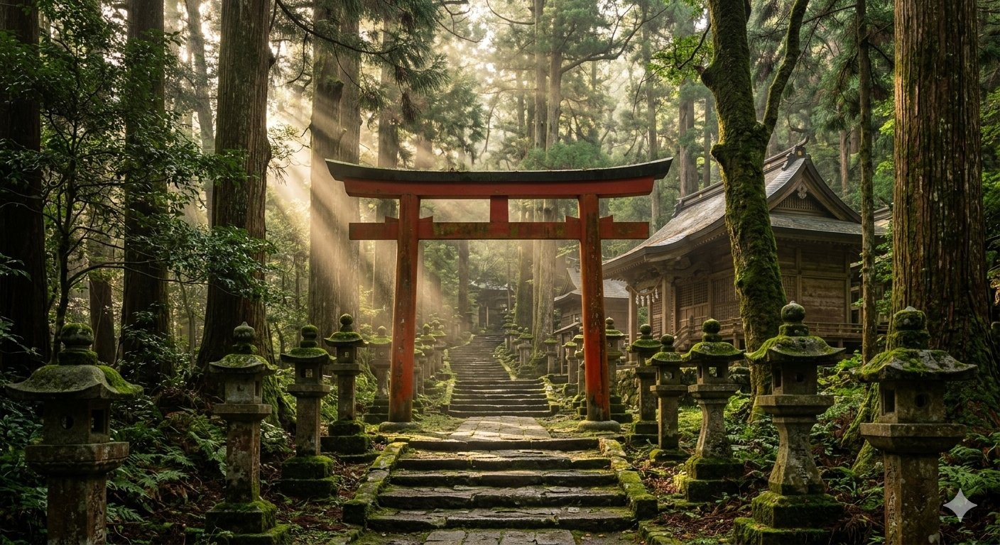
The mountain-perched Homangu Kamado Shrine in Dazaifu, Fukuoka prefecture, exploded in popularity after the *Demon Slayer: Kimetsu no Yaiba* phenomenon, owing to the shared "Kamado" name with the series and the shrine's longstanding connection to demon-warding rituals. The 1,350-year-old shrine sits on Mount Homan and is dedicated to matchmaking, attracting young couples for centuries before its anime fame. Modern stained-glass ema, a contemporary glass tea house, and the surrounding mountain forest make the climb itself memorable. Combine with nearby Dazaifu Tenmangu, the pre-eminent shrine of academic learning. Reach Dazaifu by train from Fukuoka's Tenjin Station in 30 minutes.
in HITA
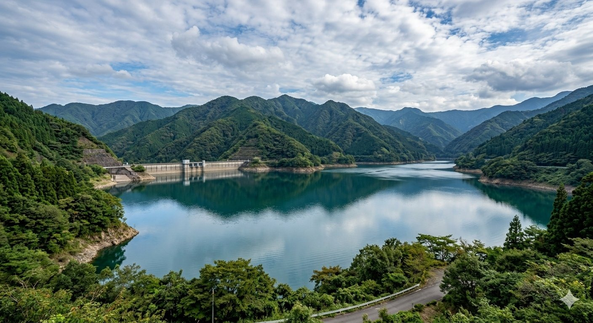
Hita city in Oita prefecture is the hometown of *Attack on Titan* creator Hajime Isayama, and the town has constructed a small but moving tribute circuit around its native son. The bronze sculpture trio dedicated to the series stands beside Oyama Dam, whose vast surrounding wall reportedly inspired the manga's iconic walled landscape. A nearby museum exhibits original concept art and the artist's high-school sketches alongside Hita-themed merchandise. Combine with a soak at Hita's Tenryo Onsen hot springs and a walk through the town's preserved Edo-era merchant district. Reach Hita by limited express from Hakata in 80 minutes.